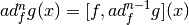
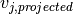
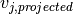

Documentation for the code¶
lietools (package)¶
lietools (module)¶
Note
abcd
- lietools.lietools.jac(expr, *args)¶
1234 Calculates the Jacobian matrix (derivative of a vectorial function) using the jacobian() function from the module sympy.matrices.matrices.MatrixBase.
Advantage: direct derivation of functions
Jacobian matrix:
Parameters
- expr : expression to derive
function / row matrix/ column matrix
- args : coordinates
separate or as list-like object
Return
- returns : Jacobi matrix
- type : sympy.Matrix
Examples
>>> import sympy >>> x1,x2,x3 = sympy.symbols('x1 x2 x3')
>>> jac(x1**2+2*x2+x3, x1, x2, x3) Matrix([[2*x1, 2, 1]])
See also
sympy.jacobian()
- lietools.lietools.lie_bracket(f, g, *args, **kwargs)¶
Calculates the Lie bracket for the vector field along the vector field
 (e.g. [Isidori]):
(e.g. [Isidori]):with  and
Parameters
- f : vector field (direction for derivation)
Matrix (shape: (n, 1)) / iterable
- g : vector field to be derived
Matrix (shape: (n, 1)) / iterable
- args : coordinates
separate scalar symbols or as iterable
Keyword Arguments
- n : number of derivations
non-negative integer (default = 1)
Exceptions
- AssertionError : non-matching shapes of f, g, args
Return
- returns : vector field
- type : sympy.Matrix
Examples
>>> import sympy
>>> x1,x2,x3 = sympy.symbols('x1 x2 x3') >>> g = [2*x2, x1**2, 2*x3] >>> f = [x1*x2, x3, x2]
>>> lie_bracket(g, f, x1, x2, x3, n=1) Matrix([ [x1**3 + 2*x2**2 - 2*x3], [ -2*x1**2*x2 + 2*x3], [ x1**2 - 2*x2]])
See also
lie_deriv(), lie_deriv_covf()
- lietools.lietools.lie_deriv(sf, vf, x, n=1)¶
Calculates the Lie derivative of a scalar field along a vector field
(e.g. [Isidori]):with and
Parameters
- sf : scalar field to be derived
function
- vf : vector field to derive along
vector
- x : coordinates for derivation
list
- n : number of derivations
non-negative integer
Return
- returns : scalar field
- type : function
Examples
>>> import sympy
>>> x1,x2,x3 = sympy.symbols('x1 x2 x3') >>> h = x1**2 + 2*x2 + x3 >>> f = sympy.Matrix([x1*x2, x3, x2]) >>> x = [x1, x2, x3]
>>> lie_deriv(h, f, x, n=1) 2*x1**2*x2 + x2 + 2*x3
See also
lie_bracket(), lie_deriv_covf()
- lietools.lietools.lie_deriv_covf(w, f, *args, **kwargs)¶
Calculates the Lie derivative of the covector field along the vector field
(e.g. [Isidori]):with
and
Includes the option to omit the transposition of with transpose_jac = False:
Parameters
- w : covector field to be derived
vector (sympy.Matrix of shape (1,m))
- f : vector field (direction of derivation)
vector (sympy.Matrix of shape (m,1))
- args : coordinates
separate or as list-like object
Keyword Arguments
- n : number of derivations
non-negative integer (default = 1)
- transpose_jac : transposition of
boolean (default = True)(Background: needed for some special applications)
Exceptions
- AssertionError : non-matching shapes of w, f, args
Return
- returns : covector field
- type : sympy.Matrix
Examples
>>> import sympy
>>> x1,x2,x3 = sympy.symbols('x1 x2 x3') >>> w = sympy.Matrix([[2*x2, x1**2, 2*x3]]) >>> f = sympy.Matrix([x1, x2, x3])
>>> lie_deriv_covf(w, f, x1, x2, x3, n=1) Matrix([[4*x2, 3*x1**2, 4*x3]])
See also
lie_deriv(), lie_bracket()
linearcontrol¶
linearcontrol¶
The module linearcontrol contains functions concerning linear control algorithms.
- linearcontrol.linearcontrol.cont_mat(A, B)¶
Kallmanns controlability matrix
- linearcontrol.linearcontrol.is_left_coprime(Ap, Bp=None, eps=1e-10)¶
Test ob Ap,Bp Linksteilerfrei sind keine Parameter zulässig
- linearcontrol.linearcontrol.linear_input_trafo(B, row_idcs)¶
serves to decouple inputs from each other
robust_poleplacement¶
The module robust_poleplacement contains functions to calculate a robust control matrix for multiple input systems.
- linearcontrol.robust_poleplacement.exchange_all_cols(V, P_list)¶
For every column in V: Calculates the 1-dimensional basis of the annihilator () of all the other columns in V and projects to its correspondent space out of P_list.
Then in V: replaces
 with the new normalized
projected vector .
with the new normalized
projected vector .See also
opt_place_MI()
Parameters
- V : matrix of eigenvectors
sympy.Matrix
- P_list : list of spaces for
list
Return
- returns : new eigenvector matrix V
- type : sympy.Matrix
- linearcontrol.robust_poleplacement.full_qr(A, only_null_space=False)¶
Performs the QR numpy decomposition and augments the reduced orthonormal matrix by its transposed null space (such that
 is quadratic and regular).
is quadratic and regular).Parameters
- A : matrix to be QR decomposed
sympy.Matrix
Keyword Arguments
- only_null_space : only the null space of will be returned
boolean (default = False)
Return
- returns : Q (quadratic & regular)
- type : sympy.Matrix
- returns : r (upper triangular matrix)
- type : sympy.Matrix
- linearcontrol.robust_poleplacement.opt_place_MI(A, B, *eigenvals, **kwargs)¶
Calculates and returns the optimal control matrix for the new system matrix of the closed loop system by the algorithm described in [Reinschke14].
Parameters
- A : state matrix of the open loop
sympy.Matrix
- B : input matrix
sympy.Matrix
- eigenvals : desired eigenvalues for the closed loop system
separate or as list-like object
Keyword Arguments
- rtol : relative tolerance of the change in the last iteration step of the
resulting determinant of the eigenvector matrix
real number (default = 0.01)
Return
- returns :
- type : sympy.Matrix
- linearcontrol.robust_poleplacement.ortho_complement(M)¶
Gets a n,n-matrix M which is assumed to have rank n-1 and returns a “column” v with and .
Parameters
- M : matrix of vectors with rank n-1
sympy.Matrix
Return
- returns : orthogonal complement for columns of M
- type : numpy.array (1d)
trajectories¶
trajectories¶
The module trajectories contains functions concerning the construction of system trajectories.
- trajectories.trajectories.integrate_pw(fnc, var, transpoints)¶
due to a bug in sympy we must correct the offset in the integral to make the result continious
- trajectories.trajectories.make_pw(var, transpoints, fncs)¶
auxfuncs/math¶
The auxfuncs package math contains mathematical auxiliary functions for pycontroltools categorized in the modules concerning:
- differential operators
- LaPlace
- matrices
- miscellaneous
- numerical tools
- polynomial helpfunctions
- Taylor
diffoperators¶
The module diffoperators contains functions concerning differential Operators.
- auxfuncs.math.diffoperators.div(vf, x)¶
divergence of a vector field
- auxfuncs.math.diffoperators.gradient(scalar_field, xx)¶
# returns a row vector (coverctorfiel)!
- auxfuncs.math.diffoperators.hoderiv(f, x, N=2)¶
computes a H igher O rder derivative of the vectorfield f
Result is a tensor of type (N,0)
or a n x L x ... x L (N times) hyper Matrix
(represented a (N+1)-dimensional numpy array
laplace¶
The module laplace contains functions concerning LaPlace.
- auxfuncs.math.laplace.do_laplace_deriv(laplace_expr, s, t)¶
Example: laplace_expr = s*(t**3+7*t**2-2*t+4) returns: 3*t**2 +14*t - 2
matrix¶
The module matrix contains functions concerning operations on matrices.
- auxfuncs.math.matrix.all_k_minors(M, k, **kwargs)¶
returns all minors of order k of M
Note that if k == M.shape[0]
this computes all “column-minors”
- auxfuncs.math.matrix.as_mutable_matrix(matrix)¶
sympy sometimes converts matrices to immutable objects this can be reverted by a call to .as_mutable() this function provides access to that call as a function (just for cleaner syntax)
- auxfuncs.math.matrix.cancel_rows_cols(M, rows, cols)¶
cancel rows and cols form a matrix
rows ... rows to be canceled cols ... cols to be canceled
- auxfuncs.math.matrix.col_degree(col, symb)¶
- auxfuncs.math.matrix.col_minor(A, *cols, **kwargs)¶
returns the minor (determinant) of the columns in cols
- auxfuncs.math.matrix.col_select(A, *cols)¶
selects some columns from a matrix
- auxfuncs.math.matrix.col_stack(*args)¶
takes some col vectors and aggregetes them to a matrix
- auxfuncs.math.matrix.concat_cols(*args)¶
takes some col vectors and aggregetes them to a matrix
- auxfuncs.math.matrix.concat_rows(*args)¶
takes some row (hyper-)vectors and aggregetes them to a matrix
- auxfuncs.math.matrix.elementwise_mul(M1, M2)¶
performs elment wise multiplication of matrices
- auxfuncs.math.matrix.ensure_mutable(arg)¶
ensures that we handle a mutable matrix (iff arg is a matrix)
- auxfuncs.math.matrix.expand(arg)¶
sp.expand currently has no matrix support
- auxfuncs.math.matrix.general_minor(A, rows, cols, **kwargs)¶
selects some rows and some cols of A and returns the det of the resulting Matrix
- auxfuncs.math.matrix.getOccupation(M)¶
maps (m_ij != 0) to every element
- auxfuncs.math.matrix.get_col_reduced_right(A, symb, T=None, return_internals=False)¶
Takes a polynomial matrix A(s) and returns a unimod Transformation T(s) such that A(s)*T(s) (i.e. right multiplication) is col_reduced.
Approach is taken from appendix of the PHD-Thesis of S. O. Lindert (2009)
Args : A: Matrix s: symbol T: unimod-Matrix from preceeding steps -> recursive approach
Returns: Ar: reduced Matrix T: unimodular transformation Matrix
- auxfuncs.math.matrix.get_rows(A)¶
returns a list of n x 1 vectors
- auxfuncs.math.matrix.is_col_reduced(A, symb, return_internals=False)¶
tests whether polynomial Matrix A is column-reduced
- optionally returns internal variables:
- the list of col-wise max degrees the matrix with the col.-wise-highest coeffs (Gamma)
Note: concept of column-reduced matrix is important e.g. for solving a Polynomial System w.r.t. highest order “derivative”
Note: every matrix can be made col-reduced by unimodular transformation
- auxfuncs.math.matrix.is_row_reduced(A, symb, *args, **kwargs)¶
transposed Version of is_col_reduced(...)
- auxfuncs.math.matrix.matrix_atoms(M, *args, **kwargs)¶
- auxfuncs.math.matrix.matrix_count_ops(M, visual=False)¶
- auxfuncs.math.matrix.matrix_degrees(A, symb)¶
- auxfuncs.math.matrix.matrix_random_equaltest(M1, M2, info=False, **kwargs)¶
- auxfuncs.math.matrix.matrix_series(m, xx, order, poly=False)¶
- auxfuncs.math.matrix.matrix_subs_random_numbers(M)¶
substitute every symbol in M with a random number
this might be usefull to determine the generic rank of a matrix
- auxfuncs.math.matrix.matrix_with_rationals(A)¶
- auxfuncs.math.matrix.mdiff(M, var)¶
returns the elementwise derivative of a matrix M w.r.t. var
- auxfuncs.math.matrix.ratsimp(arg)¶
sp.ratsimp currently has no matrix support
- auxfuncs.math.matrix.row_col_select(A, rows, cols)¶
selects some rows and some cols of A and returns the resulting Matrix
- auxfuncs.math.matrix.row_stack(*args)¶
takes some row (hyper-)vectors and aggregetes them to a matrix
- auxfuncs.math.matrix.simplify(arg)¶
sp.simplify currently has no matrix support
- auxfuncs.math.matrix.symbMatrix(n, m, s='a', symmetric=0)¶
- auxfuncs.math.matrix.symm_matrix_to_vect(M)¶
converts a b b c
to [a, b, c]
- auxfuncs.math.matrix.symmetryDict(M)¶
erstellt ein dict, was aus einer beliebigen Matrix M mittels M.subs(..) eine symmetrische Matrix macht
- auxfuncs.math.matrix.trigsimp(arg, **kwargs)¶
sp.trigsimp currently has no matrix support
- auxfuncs.math.matrix.unimod_completion(col, symb)¶
takes a column and completes it such that the result is unimodular
- auxfuncs.math.matrix.vect_to_symm_matrix(v)¶
converts [a, b, c]
- to a b
- b c
miscmath¶
The module miscmath contains miscellaneous mathematical functions for pycontroltools.
- class auxfuncs.math.miscmath.equation(lhs, rhs=0)¶
#chris: Klasse equation erstellt Gleichungs-Objekte mittles sympify mit Attributen für Lefthandside (lhs) und Righthandside (rhs) der Gleichung
- auxfuncs.math.miscmath.extract_independent_eqns(M)¶
handles only homogeneous eqns
M Matrix
returns two lists: indices_of_rows, indices_of_cols
- auxfuncs.math.miscmath.fractionfromfloat(x_, maxden=1000)¶
fraction from float args:
x maxdenominator (default = 1000)
- auxfuncs.math.miscmath.get_coeff_row(eq, vars)¶
takes one equation object and returns the corresponding row of the system matrix
- auxfuncs.math.miscmath.jac(expr, *args)¶
Calculates the Jacobian matrix (derivative of a vectorial function) using the jacobian() function from the module sympy.matrices.matrices.MatrixBase.
Advantage: direct derivation of functions
Jacobian matrix:
Parameters
- expr : expression to derive
function / row matrix/ column matrix
- args : coordinates
separate or as list-like object
Return
- returns : Jacobi matrix
- type : sympy.Matrix
Examples
>>> import sympy >>> x1,x2,x3 = sympy.symbols('x1 x2 x3')
>>> jac(x1**2+2*x2+x3, x1, x2, x3) Matrix([[2*x1, 2, 1]])
See also
sympy.jacobian()
- auxfuncs.math.miscmath.lin_solve_all(eqns)¶
takes a list of equations and tries to solve wrt. to all ocurring symbols
- auxfuncs.math.miscmath.lin_solve_eqns(eqns, vars)¶
takes a list of equation objects creates a system matrix of and calls sp.solve
- auxfuncs.math.miscmath.lin_solve_eqns_jac(eqns, vars)¶
takes a list of equation objects creates a system matrix of and calls sp.solve
# new version !! # should replace lin_solve_eqns
# assumes that eqns is a list of expressions where rhs = 0
- auxfuncs.math.miscmath.make_eqns(v1, v2=None)¶
#chris: mehrere lhs,rhs übergeben und daraus Gleichungen erstellen
- auxfuncs.math.miscmath.multi_series(expr, xx, order, poly=False)¶
Reihenentwicklung (um 0) eines Ausdrucks in mehreren Variablen
- auxfuncs.math.miscmath.numer_denom(expr)¶
- auxfuncs.math.miscmath.rat_if_close(x, tol=1e-10)¶
- auxfuncs.math.miscmath.rationalize_expression(expr, tol=1e-10)¶
substitutes real numbers occuring in expr which are closer than tol to a rational with a sufficiently small denominator with these rationals
usefull special case 1.2346294e-15 -> 0
- auxfuncs.math.miscmath.real_roots(expr)¶
- auxfuncs.math.miscmath.roots(expr)¶
- auxfuncs.math.miscmath.sp_fff(x, maxden)¶
sympy_fraction from float #chris: nimmt anscheinend Objekte vom Typ fractions.Fraction (Fraction(133, 10)) und stellt sie als Bruch dar (133/10)
- auxfuncs.math.miscmath.symbs_to_func(expr, symbs, arg)¶
in expr replace x by x(arg) where x is any element of symbs
- auxfuncs.math.miscmath.trigsimp2(expr)¶
sin**2 + cos**2 = 1 in big expressions
- auxfuncs.math.miscmath.uv(n, i)¶
unit vectors (columns)
numtools¶
The module numtools contains numerical tools.
- auxfuncs.math.numtools.chop(expr, tol=1e-10)¶
suppress small numerical values
- auxfuncs.math.numtools.clean_numbers(expr, eps=1e-10)¶
trys to clean all numbers from numeric noise
- auxfuncs.math.numtools.cont_continuation(x, stephight, threshold)¶
continuous continuation (for 1d-arrays)
x .... data
stephight ... the expected stephight (e.g 2*pi)
- threshold .... smallest difference which is considered as a discontinuity
which has to be corrected (must be greater than the Lipschitz-Const. of the signal
times dt)
- auxfuncs.math.numtools.dd(a, b, c, ...) = np.dot(a, np.dot(b, np.dot(c, ...)))¶
- auxfuncs.math.numtools.extrema(x, max=True, min=True, strict=False, withend=False)¶
This function will index the extrema of a given array x.
- Options:
- max If true, will index maxima min If true, will index minima strict If true, will not index changes to zero gradient withend If true, always include x[0] and x[-1]
This function will return a tuple of extrema indexies and values
- auxfuncs.math.numtools.np_trunc_small_values(arr, lim=1e-10)¶
- auxfuncs.math.numtools.null(A, eps=1e-10)¶
null-space of a Matrix or 2d-array
- auxfuncs.math.numtools.pyc2d(a, b, Ts)¶
Algorithmus kopiert von Roberto Bucher
Begründung: man erweitert den Zustand xneu = (x,u) und sagt u_dot = 0 (weil u=konst.) Für das neue System bekommt man die zusammengestzte Matrix und pflückt sie hinterher wieder auseinander.
- auxfuncs.math.numtools.random_equaltest(exp1, exp2, info=False, integer=False, seed=None, tol=1e-14, min=-1, max=1)¶
serves to check numerically (with random numbers) whether exp1, epx2 are equal # TODO: unit test
- auxfuncs.math.numtools.to_np(arr, dtype=<type 'float'>)¶
converts a sympy matrix in a nice numpy array
- auxfuncs.math.numtools.zero_crossing_simulation(rhs, zcf, z0, t_values)¶
scipy.odeint does not provide a zero crossing function naive (and slow) approach
rhs: rhs function zcf: the function whose zerocrossing shall be detected
takes the state (shape =(n,m) returns shape=nz0: initial state t_values: time values (up to which the zc event is suspected)
polynomial¶
The module polynomial contains functions concerning the construction of polynomials.
- auxfuncs.math.polynomial.coeffs(expr, var=None)¶
if var == None, assumes that there is only one variable in expr
- auxfuncs.math.polynomial.condition_poly(var, *conditions)¶
# this function is intended to be a generalization of trans_poly
returns a polynomial y(t) that fullfills given conditions
every condition is a tuple of the following form:
(t1, y1, *derivs) # derivs contains cn derivatives
every derivative (to the highest specified [in each condition]) must be given
- auxfuncs.math.polynomial.element_deg_factory(symb)¶
returns a function for getting the polynomial degree of an expr. w.r.t. a certain symbol
- auxfuncs.math.polynomial.get_order_coeff_from_expr(expr, symb, order)¶
example: 3*s**2 -4*s + 5, s, 3 -> 0 3*s**2 -4*s + 5, s, 2 -> 3 3*s**2 -4*s + 5, s, 1 -> -4 3*s**2 -4*s + 5, s, 9 -> 0
- auxfuncs.math.polynomial.poly_coeffs(expr, var=None)¶
returns all (monovariate)-poly-coeffs (including 0s) as a list first element is highest coeff.
- auxfuncs.math.polynomial.poly_degree(expr, var=None)¶
returns degree of monovariable polynomial
- auxfuncs.math.polynomial.poly_scalar_field(xx, symbgen, order, poly=False)¶
returns a multivariate poly with specified oders and symbolic coeffs returns also a list of the coefficients
- auxfuncs.math.polynomial.trans_poly(var, cn, left, right)¶
returns a polynomial y(t) that is cn times continous differentiable
left and right are sequences of conditions for the boundaries
left = (t1, y1, *derivs) # derivs contains cn derivatives
- auxfuncs.math.polynomial.zeros_to_coeffs(*z_list, **kwargs)¶
calculates the coeffs corresponding to a poly with provided zeros
taylor¶
The module taylor contains functions concerning the construction of Taylor polynomials.
- auxfuncs.math.taylor.multi_taylor(expr, args, x0=None, order=1)¶
compute a multivariate taylor polynomial of a scalar function
default: linearization about 0 (all args)
- auxfuncs.math.taylor.multi_taylor_matrix(M, args, x0=None, order=1)¶
applies multi_taylor to each element
- auxfuncs.math.taylor.series(expr, var, order)¶
taylor expansion at zero (without O(.) )
auxfuncs/programming¶
The helpfunctions package programming contains helpfunctions for pycontroltools concerning programming issues.
miscprog¶
The module miscprog contains miscellaneous functions concerning programming in pycontroltools.
- auxfuncs.programming.miscprog.atoms(expr, *args, **kwargs)¶
- auxfuncs.programming.miscprog.aux_make_tup_if_necc(arg)¶
checks whether arg is iterable. if not return (arg,)
- auxfuncs.programming.miscprog.expr_to_func(args, expr, modules='numpy', **kwargs)¶
wrapper for sympy.lambdify to handle constant expressions (shall return a numpyfied function as well)
this function bypasses the following problem:
f1 = sp.lambdify(t, 5*t, modules = “numpy”) f2 = sp.lambdify(t, 0*t, modules = “numpy”)
f1(np.arange(5)).shape # -> array f2(np.arange(5)).shape # -> int
Some special kwargs: np_wrapper == True:
the return-value of the resulting function is passed through to_np(..) before returning
- auxfuncs.programming.miscprog.get_diffterms(xx, order)¶
returns a list such as
[(x1, x1), (x1, x2), (x1, x3), (x2, x2), (x2, x3), (x3, x3)]
for xx = (x1, x2, x3) and order = 2
- auxfuncs.programming.miscprog.get_expr_var(expr, var=None)¶
auxillary function if var == None returns the unique symbol which is contained in expr: if no symbol is found, returns None
- auxfuncs.programming.miscprog.makeGlobal(varList)¶
injects the symbolic variables of a collection to the global namespace usefull for interactive sessions
- auxfuncs.programming.miscprog.make_global(varList)¶
injects the symbolic variables of a collection to the global namespace usefull for interactive sessions
- auxfuncs.programming.miscprog.prev(expr, **kwargs)¶
sympy preview abbreviation
- auxfuncs.programming.miscprog.rev_tuple(tup)¶
- auxfuncs.programming.miscprog.simp_trig_dict(sdict)¶
takes a sorted dict, simplifies each value and adds all up
- auxfuncs.programming.miscprog.subs_same_symbs(x+y[, x, y])¶
returns x+y, where the symbols are taken from the list (symbs in exp might be different objects with the same name)
this functions helps if expr comes from a string
- auxfuncs.programming.miscprog.trig_term_poly(expr, s)¶
s ... the argument of sin, cos
- auxfuncs.programming.miscprog.tup0(xx)¶
helper function for substituting. takes (x1, x2, x3, ...) returns [(x1, 0), (x2, 0), ...]
- auxfuncs.programming.miscprog.zip0(xx, arg=0)¶
handy for subtituting equilibrium points